Controlli dell'editor
Quando avvii l'editor, si presenta così:
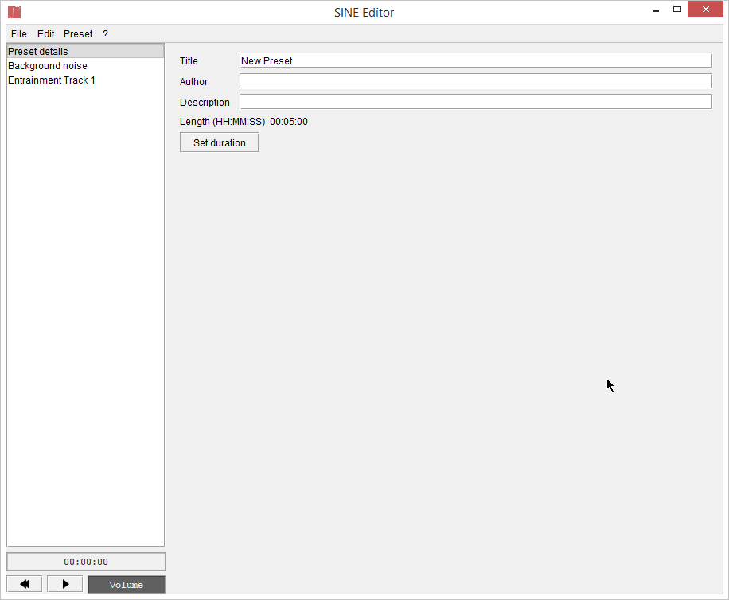
Menu
In cima alla finestra, c'è la barra dei menu:
-
File: Caricamento e salvataggio
- Nuovo: crea un nuovo Preset. Il Preset modello è di 5 minuti, non ha loop e riproduce una pulsazione costante di 10Hz con una frequenza base di 440Hz.
- Carica: modifica un file .sin. Nota: se il preset è stato creato manualmente (ad esempio con un editor di testi), potrebbe non essere possibile modificarlo in questo editor
- Salva: salva il Preset sul file corrente. Se non c'è un file aperto, si apre una finestra "salva con nome"
- Save con nome: salva il preset su un file scelto dall'utente
- Esporta: Salva il Preset come un comune file audio. Attenzione: NON è possibile modificare Preset esportati!
- Condividi: collegamento alla piattaforma di condivisione Preset. Vedi la sezione condivisione di questo manuale per ulteriori informazioni
- Importa Preset HBX: Importa un Preset per HBX Binaural Player (con delle limitazioni mostrate sotto)
- Esci: chiude l'editor
-
Modifica: per quando si fanno errori
- Annulla: annulla l'ultima operazione operation
- Ripeti: ripete un'operazione annullata
-
Preset
- Aggiungi traccia di Entrainment: inserisce una nuova traccia di Entrainment. Inizialmente riproduce una pulsazione costante a 10Hz con frequenza base di 440Hz, a volume massimo
- Clona traccia selezionata: clona la traccia correntemente selezionata. Solo le tracce di Entrainment si possono clonare
- Rimuovi traccia selezionata: cancella la traccia correntemente selezionata. Solo le tracce di Entrainment si possono rimuovere, e non puoi rimuovere l'ultima traccia di Entrainment
- Imposta durata: cambia la lunghezza del Preset e configura il loop
- Calcola complessità: stima la complessità del Preset e ti informa su quali dispositivi potrebbero avere problemi a riprodurlo
- Ottimizza: rimuove punti e tracce inutili. Una minima perdita di precisione è possibile.
-
?
- Guida: apre questo manuale
- Tutorial online: Mostra un breve video tutorial
- Informazioni su SINE Editor: mostra informazioni sull'applicazione
Selettore delle tracce
Sulla sinistra, c'è una lista di tutte le tracce nel Preset. Vedi struttura Preset per vedere come un Preset è strutturato.
Clicca su una traccia, e il suo contenuto sarà mostrato sulla destra.
Modificare gli Envelope
Le tracce di rumore di sottofondo e di Entrainment contengono degli envelope.
Modificarli è semplice, ma ti servirà un mouse.
Ecco come si presenta un Envelope:
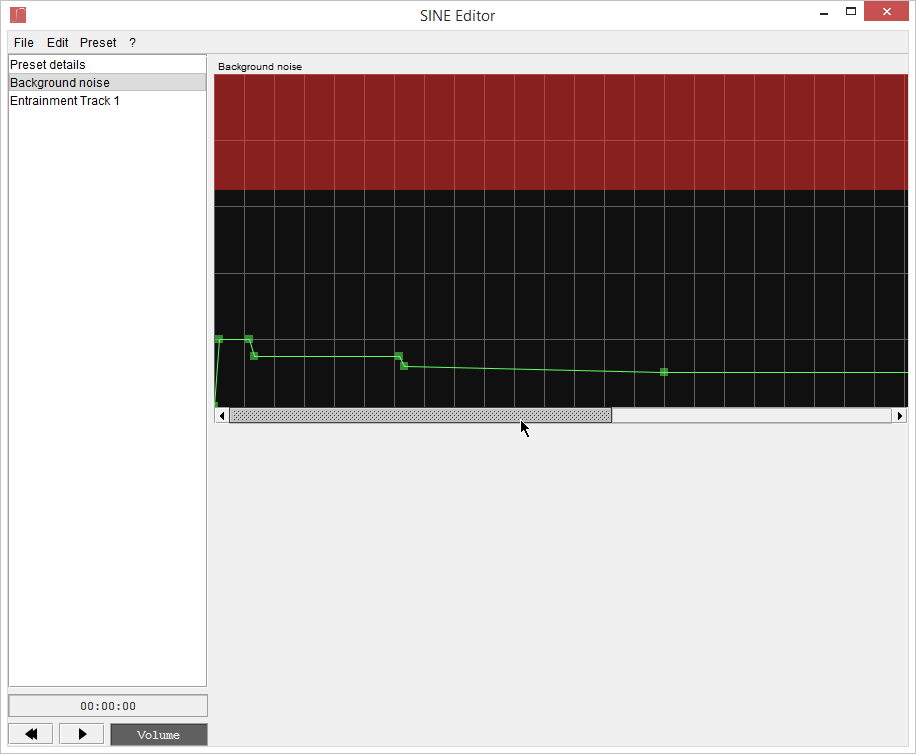
In questo caso specifico, è un Envelope di rumore di sottofondo.
Ogni linea verticale rappresenta un minuto. Le linee orizzontali sono per la tua comodità.
L'area in rosso indica valori che potrebbero essere troppo alti.
Come vedi, ci sono diversi punti: ognuno di essi ha 2 coordinate: tempo e valore.
Muovendo il mouse
If you move the mouse sopra al grafico, verranno mostrate le coordinate di quel punto.
La linea verde indica come il valore cambia nel tempo.
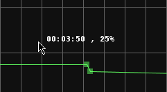
Se il mouse è sopra un punto, le sue coordinate saranno mostrate in blu.
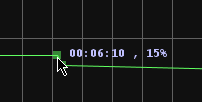
Trascina i punti con il tasto sinitro del mouse per cambiarne le coordinate.
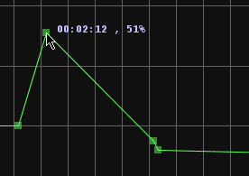
A volte (come nell'immagine sopra), un Envelope può essere molto lungo ed uscire dallo schermo: per spostarti, trascina la barra di scorrimento sotto l'envelope, e usa la rotella del mouse per zoomare.
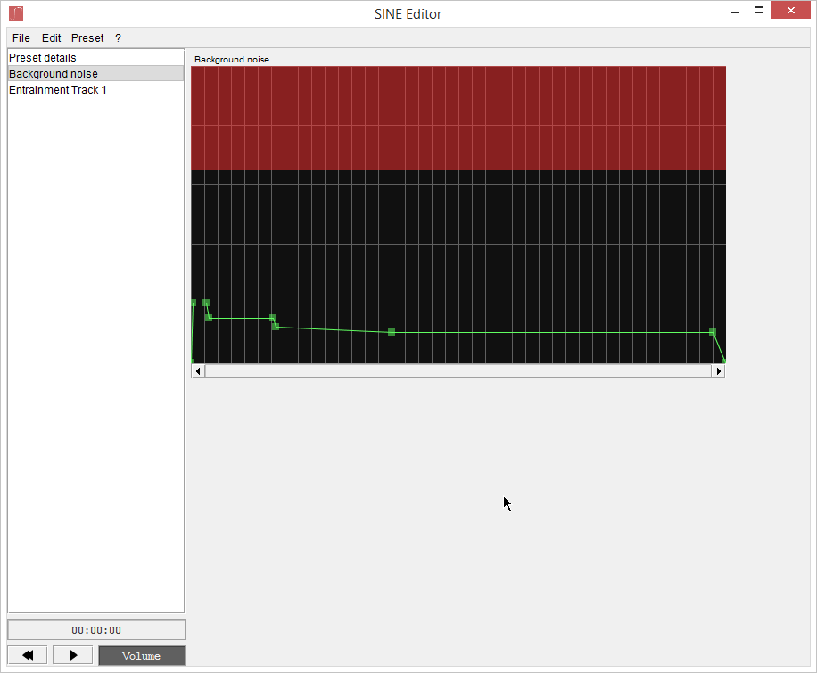
Ora l'Envelope ci sta per intero, e puoi sempre zoomare di nuovo se serve più precisione.
Per aggiungere un punto, clicca ovunque nel grafico dove non c'è un punto, e ne verrà aggiunto uno.
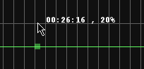
Come puoi notare, il punto è creato alle coordinate temporali del cursore, ma non con quel valore.
Per cancellare un punto, fai click su di esso col tasto destro del mouse.
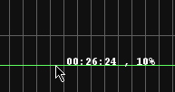
Come vedi, ora abbiamo un solo punto, che significa che l'Envelope è un valore costante. Avere valori costanti per la Frequenza Base è delle tracce di Entrainment è piuttosto comune, dato che raramente si cambia nota.
A volte potresti voler impostare manualmente il valore di un punto: lo puoi fare cliccandolo con il tasto centrale o facendoci doppio click.
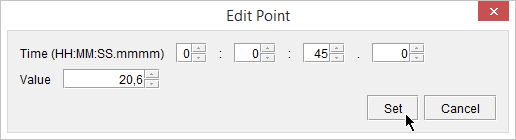
Impostare lunghezza e loop
Per cambiare la lunghezza e configurare il loop, apri il menu Preset e clicca Imposta durata.
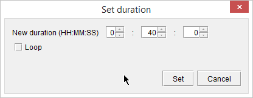
I Preset possono durare da 10 secondi fino a 9 ore, 59 minuti e 59 secondi, ma tipicamente durano 20-40 minuti.
Se vuoi far ripetere una parte di Preset, seleziona Loop:
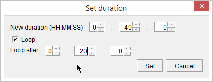
In questo esempio facciamo ripetere la parte dopo i 3 minuti.
Clicca Imposta per confermare.
Ora tutti gli Envelope mostrano una parte in blu, che indica la parte che si ripete:
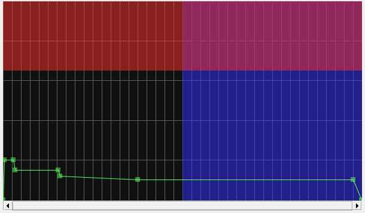
Annulla/Ripeti
Se fai qualcosa per sbaglio, seleziona Annulla dal menu Modifica per annullare l'ultima azione.
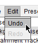
Se annulli un'azione per sbaglio, seleziona Ripeti dal menu Modifica per ripetere l'azione annullata.
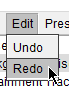
Testare il Preset
Prima di condividere un Preset, va testato. Lo puoi fare direttamente dall'editor: premi Play sul piccolo player in basso a sinistra.
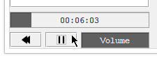
I controlli sono molto semplici: premi Play per iniziare la riproduzione, Pausa per fermarla, Trascina sulle barre per cambiare posizione e volume, Riavvolgi per tornare all'inizio. Quando hai finito, lascialo in pausa.
Puoi anche modificare il Preset mentre ascolti l'anteprima.
Se il tuo Preset ha un loop, assicurati che non si sentano differenze tra la fine e l'inizio della sezione che si ripete.
Ora sai come controllare l'editor
Guarda la prossima sezione per imparare a creare i Preset.
Importare Preset da HBX Binaural Player
HBX Binaural Player è un'altra nostra applicazione di Brainwave Entrainment che ha un bel po' di Preset.
Questo editor include un semplice convertitore di Preset: apri il menu File, clicca Importa Preset HBX e seleziona il Preset da importare.
Se tutto va a buon fine, sarà visualizzato nell'editor.
Anche se di solito funziona bene, ci sono alcune limitazioni:
- I Fattori di Interpolazione non sono supportati: saranno tutti trattati come lineari (1)
- Le Frequenze Binaurali devono essere tra 0 e 40 Hz
- Tutti i volumi devono essere tra 0 e 1
- Ci potrebbero essere dei punti extra in alcuni Envelope (sono innocui, ma aumentano la complessità del Preset)
I valori temporali negativi sono supportati.
Spesso è utile aumentare la Frequenza Base.